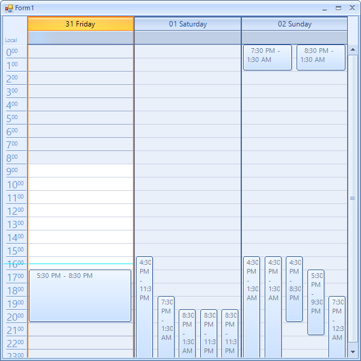
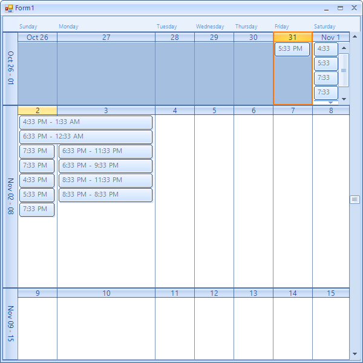

Modify Size of Rows, Columns and Resources
RadScheduler
allows you to customize the size of the rows and the columns of the views where this is applicable. Below you can see how to customize each of the available views:
DayView, WeekView and WorkWeekView
On the day view you can resize the columns which represent a given day (16 Friday, 17 Saturday, 18 Sunday on the figure above).
Here is how you can make the middle columns three times bigger:
[C#]
scheduler.ActiveViewType = SchedulerViewType.Day; // this can be changed to either Week or WorkWeek, the ViewElement is always SchedulerDayViewElement
(scheduler.ViewElement as SchedulerDayViewElement).SetColumnWidth(1, 3);
[VB.NET]
scheduler.ActiveViewType = SchedulerViewType.Day
' this can be changed to either Week or WorkWeek, the ViewElement is always SchedulerDayViewElement
TryCast(scheduler.ViewElement, SchedulerDayViewElement).SetColumnWidth(1, 3)
The actual width of a column will be calculated proportionally according to the values other columns have. The default value of each column is 1. This means that setting a value of 2 for a given column will make it twice as large compared to other columns.

MonthView
In month view both rows and columns are resizable. The rows on the screenshots are May 11-17, May 18-24, May 25-31 and the columns are May 11, 12, 13 ,14 ,15 ,16 ,17 for the first row and 18, 19 and so on for the second row.
The approach for this view is similar:
[C#]
scheduler.ActiveViewType = SchedulerViewType.Month;
(scheduler.ViewElement as SchedulerMonthViewElement).SetColumnWidth(1, 2.5f);
(scheduler.ViewElement as SchedulerMonthViewElement).SetRowHeight(1, 2.5f);
[VB.NET]
scheduler.ActiveViewType = SchedulerViewType.Month
TryCast(scheduler.ViewElement, SchedulerMonthViewElement).SetColumnWidth(1, 2.5F)
TryCast(scheduler.ViewElement, SchedulerMonthViewElement).SetRowHeight(1, 2.5F)

TimelineView
Here we see the columns named as 19-25 may. The same approach can be applied here as well:
[C#]
scheduler.ActiveViewType = SchedulerViewType.Timeline;
(scheduler.ViewElement as SchedulerTimelineViewElement).SetColumnWidth(1, 3f);
[VB.NET]
scheduler.ActiveViewType = SchedulerViewType.Timeline
TryCast(scheduler.ViewElement, SchedulerTimelineViewElement).SetColumnWidth(1, 3.0F)

ResourceView
Here we see the resources - "Conference Room 112/113". Resizing them can happen as follows:
[C#]
scheduler.GroupType = GroupType.Resource;
scheduler.ActiveViewType = SchedulerViewType.Day;
(scheduler.ViewElement as SchedulerDayViewGroupedByResourceElement).SetResourceSize(0, 0.25f);
[VB.NET]
scheduler.GroupType = GroupType.Resource
scheduler.ActiveViewType = SchedulerViewType.Day
TryCast(scheduler.ViewElement, SchedulerDayViewGroupedByResourceElement).SetResourceSize(0, 0.25F)